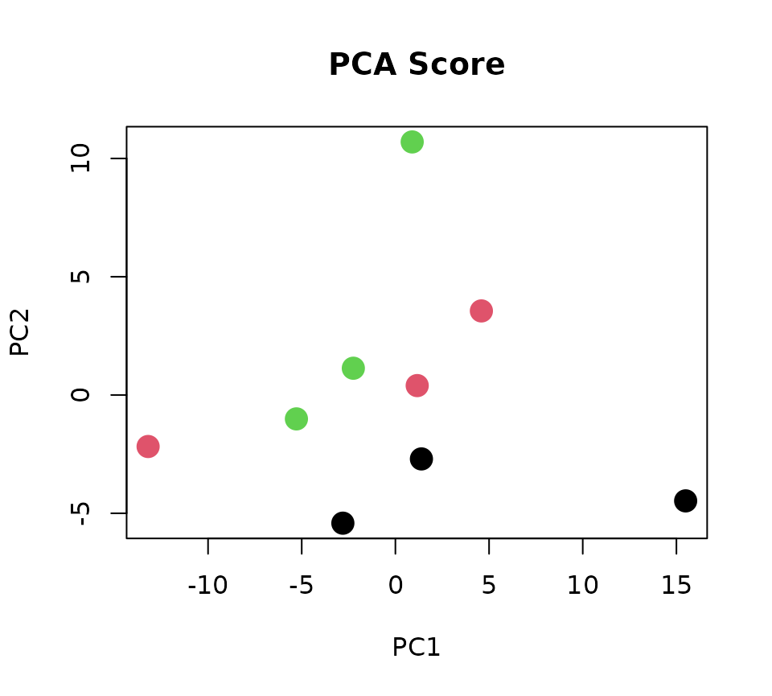

- データの説明
- loadingsパッケージのデモデータwhhlを利用する
- Wildtype，高脂血症ウサギ，高脂血症ウサギに薬剤を投与した3群の肝臓のメタボロームデータ
ライブラリとデータの読み込み
whhlの変数Xにメタボロームデータ，変数Yに群情報のダミー変数行列が含まれている．
## Y01 Y02 Y03
## 1 1 0 0
## 2 1 0 0
## 3 1 0 0
## 4 0 1 0
## 5 0 1 0
## 6 0 1 0
## 7 0 0 1
## 8 0 0 1
## 9 0 0 1
## attr(,"assign")
## [1] 1 1 1
## attr(,"contrasts")
## attr(,"contrasts")$Y0
## [1] "contr.treatment"主成分分析
PLSを行う前に，まずは主成分分析を行う．
pca <- prcomp(X,scale=TRUE) # PCA with autoscaling
PC_score <- pca$x[,c(1,2)] # First and second PC scores
# PC score plot
class <- c(1,1,1,2,2,2,3,3,3)
plot(PC_score, col=class, pch=16, cex=2, xlab="PC1", ylab="PC2", main="PCA Score")
黒丸がWild type，赤丸が高脂血症ウサギ，緑丸が高脂血症ウサギに薬剤を投与した群である．
主成分分析の結果，第1主成分と第2主成分スコアには明確な群間差を確認することが出来なかった．
Partial least squares (PLS)
主成分分析では明確な群間差が確認できなかったことから，PLSを用いて解析を行った．
# PLS
pls <- pls_svd(X,Y)
# pls <- pls_eigen(X,Y,2) # chemometricsパッケージのpls_eigen関数の場合
# PLSスコア
PLS_score <- pls$T[,c(1,2)] # First and second PLS
class <- c(1,1,1,2,2,2,3,3,3)
plot(PLS_score, col=class, pch=16, cex=2, xlab="PLS1", ylab="PLS2", main="PLS Score")横軸の第1PLSスコアで，Wild typeと高脂血症ウサギの違いが確認されたことから， 第1PLSスコアと関連する代謝物を知るために，第1PLS係数が大きな上位10物質に着目する．
metabolite_name <- colnames(whhl$X)
# weight / PLS coeficient / eigenvector
PLS_weight <- pls$P
rownames(PLS_weight) <- metabolite_name
# PLS1 weight
PLS1_weight <- PLS_weight[,1]
# top 10 metabolites (positively correlated)
PLS1_weight[order(PLS1_weight, decreasing=TRUE)[1:10]]## 3-Hydroxy-3-methylglutaric acid N,N-Dimethylglycine
## 0.14163571 0.13990688
## Betaine Uric acid
## 0.13117298 0.11615514
## 3-Hydroxybutyric acid Ser
## 0.10520606 0.09832340
## Sarcosine Carnosine
## 0.09593265 0.09199997
## Creatinine 5-Oxoproline
## 0.09033436 0.08364500
# top 10 metabolites (negatively correlated)
PLS1_weight[order(PLS1_weight, decreasing=FALSE)[1:10]]## NADH Hypoxanthine Pyridoxamine 5'-phosphate
## -0.1550979 -0.1492961 -0.1470279
## Inosine Pro Adenosine
## -0.1453836 -0.1447981 -0.1423402
## Spermidine Guanidoacetic acid NAD+
## -0.1413775 -0.1399634 -0.1377205
## Cytosine
## -0.1336458PLS係数とPLS負荷量の関係について
ここで，PLS係数とPLS負荷量の関係について確認する．
主成分分析では，主成分係数は「主成分スコアと各代謝物との相関係数」に比例していた．
そこで，PLS係数と，「PLSスコアと各代謝物の相関係数」の確認する．
## explain of PLS coefficient
# correlation with PLS score of explanatory variables
R <- NULL
for(i in 1:ncol(X)){
R[i] <- cor.test(PLS_score[,1],X[,i])$estimate
}
# PLS weight is not proportional with PLS score of explanatory variable
plot(PLS1_weight, R)
この結果より，主成分分析における主成分係数とは異なり，PLS係数は「PLSスコアと各代謝物の相関係数」には比例しないことが確認できる。
PLS負荷量を用いて代謝物を選ぶ
次にPLS負荷量について確認するために，説明変数と目的変数のスコアの両方を確認する．
# response variable
PLS_score_Y <- pls$U[,c(1,2)] # First and second PLS
par(mfrow=c(1,2))
plot(PLS_score, col=class, pch=16, cex=2, xlab="PLS1", ylab="PLS2", main="PLS(X) Score")
plot(PLS_score_Y, col=class, pch=16, cex=2, xlab="PLS1", ylab="PLS2", main="PLS(Y) Score")左右の図を確認すると，Wild type(黒)，高脂血症ウサギ(赤)，薬剤投与後の高脂血症ウサギ(緑)の各群の配置はいずれも同じ傾向を示していることが確認できる．
横軸のPLS1では，Wild typeと高脂血症群との違いが確認されることから，ここではPLS1に着目し，関連する代謝物を調べる．
ここで，PLS係数とPLS1の「目的変数のスコアと各代謝物の相関係数」をプロットした結果を次に示す．
# correlation with PLS score of response variables
R <- NULL
for(i in 1:ncol(X)){
R[i] <- cor.test(PLS_score_Y[,1],X[,i])$estimate
}
# plot(PLS_score_Y[,1], col=class, pch=16, cex=2, xlab="Sample", ylab="PLS1")
# PLS weight is proportional with PLS score of response variable
plot(PLS1_weight, R)そこで，PLS負荷量を「説明変数のスコアと各代謝物の相関係数」ではなく「目的変数のスコアと各代謝物の相関係数」として定義する．ただし，前述の通り説明変数のスコアと目的変数のスコアの傾向は似ていることから，感覚的には両者に大きな違いは無い．
loadingsパッケージを用いたPLS負荷量は，pls_loadings関数を用い，以下のように簡単に計算することが出来る．
次に，PLS1負荷量の値が大きな上位10物質を選ぶと以下のようになる．
pls <- pls_loading(pls)
PLS_loading <- pls$loading$R
p_PLS <- pls$loading$p.value # Statistical hypothesis testing of PC loading
rownames(PLS_loading) <- metabolite_name
PLS1_loading <- PLS_loading[,1]
p_PLS1 <- p_PLS[,1]
# top 10 metabolites (positively correlated)
PLS1_loading[order(PLS1_loading, decreasing=TRUE)[1:10]]## 3-Hydroxy-3-methylglutaric acid N,N-Dimethylglycine
## 0.7536951 0.7444954
## Betaine Uric acid
## 0.6980191 0.6181037
## 3-Hydroxybutyric acid Ser
## 0.5598397 0.5232146
## Sarcosine Carnosine
## 0.5104925 0.4895653
## Creatinine 5-Oxoproline
## 0.4807020 0.4451055
# top 10 metabolites (negatively correlated)
PLS1_loading[order(PLS1_loading, decreasing=FALSE)[1:10]]## NADH Hypoxanthine Pyridoxamine 5'-phosphate
## -0.8253325 -0.7944589 -0.7823887
## Inosine Pro Adenosine
## -0.7736392 -0.7705235 -0.7574440
## Spermidine Guanidoacetic acid NAD+
## -0.7523210 -0.7447960 -0.7328608
## Cytosine
## -0.7111778
index_pos <- order(PLS1_loading, decreasing=TRUE)[1]
index_neg <- order(PLS1_loading, decreasing=FALSE)[1]
第1PLS負荷量が0.7以上の代謝物は2物質，-0.7以下の代謝物は11物質，第1PLS負荷量の統計的仮説検定の結果p<0.05の代謝物は14物質，Benjamini-Hochberg法によるq-valueが0.05未満の代謝物は確認できなかった．
# Number of positively correlated metabolties
sum(PLS1_loading>=0.7)## [1] 2
# Number of negatively correlated metabolties
sum(PLS1_loading<=-0.7)## [1] 11
# Number of significant metabolites under p<0.05
sum(p_PLS1 < 0.05)## [1] 14## [1] 0
最後に，第1PLSスコア(目的変数)と最も相関の高い代謝物は，それぞれ3-Hydroxy-3-methylglutaric acidとNADHであり，その値はそれぞれ3-Hydroxy-3-methylglutaric acid(R=0.7537, p=0.0190, q=0.3594)， NADH(R=-0.8253, p=0.0061, q=0.3594)であった．
# 3-Hydroxy-3-methylglutaric acid
par(mfrow=c(1,2))
plot(PLS_score_Y[,1], col=class, pch=16, cex=2, xlab ="Sample", ylab="PLS1(Y)", main="PLS(Y) score")
plot(X[,order(PLS1_loading, decreasing=TRUE)[1]], col=class, pch=16, cex=2, xlab="Sample", ylab="Relative Area", main="3-Hydroxy-3-methylglutaric acid")
Partial least squares rank order of groups (PLS-ROG)を用いた解析
PLSでは，Wild typeと高脂血症群の違いは確認出来たが，高脂血症ウサギに薬剤を投与した時の影響については，明確には確認出来なかった．
そこで群に順序があるデータに適したPLS-ROG[Yamamoto, H. PLS-ROG: Partial least squares with rank order of groups.J.Chemom. 2017, 31, e2883.]を用いて解析を行った結果を次に示す．
D <- whhl$D # Differentially matrix
plsrog <- pls_rog(X,Y,D)
PLSROG_score <- plsrog$T[,c(1,2)] # First and second PLS
class <- c(1,1,1,2,2,2,3,3,3)
par(mfrow=c(1,2))
plot(PLS_score, col=class, pch=16, cex=2, xlab="PLS1", ylab="PLS2", main="PLS(X) score")
plot(PLSROG_score, col=class, pch=16, cex=2, xlab="PLS1", ylab="PLS2", main="PLS-ROG(X) score")
上図の左にPLS，右にPLS-ROGスコアの結果を示す．一見すると大きな違いは無いようにも見えるが，PLS-ROGの方が群に順序があるスコアが得られている．PLS1とPLS-ROG1のスコアの群毎の箱ひげ図を以下に示す．
par(mfrow=c(1,2))
boxplot(PLS_score[,1]~class, ylab="PLS1", main="PLS1(X) Score")
boxplot(PLSROG_score[,1]~class, ylab="PLS-ROG1", main="PLS-ROG1(Y) Score")
さらにPLSの目的変数のスコアを確認すると，次のようになる．
PLSROG_score_Y <- plsrog$U[,c(1,2)] # First and second PLS
par(mfrow=c(1,2))
plot(PLS_score_Y, col=class, pch=16, cex=2, xlab="PLS1", ylab="PLS2", main="PLS(Y) Score")
plot(PLSROG_score_Y, col=class, pch=16, cex=2, xlab="PLS-ROG1", ylab="PLS-ROG2", main="PLS-ROG(Y) Score")上図の左がPLS，右がPLS-ROGのスコアである．この結果より，PLS-ROGの横軸のPLS-ROG1で群の順序が確認出来ており， 薬剤投与によって高脂血症群がWild typeに近づく傾向が得られていることから，PLS-ROG1負荷量より，薬剤投与により変動する代謝物を選び出すことが出来る．
PLS-ROG負荷量を用いて代謝物を選ぶ
PLS-ROG負荷量は，PLS負荷量と同じく「目的変数のスコアと各代謝物レベルの相関係数」として定義され， 相関係数の値そのものや，統計的仮説検定を用いて有意な代謝物を選ぶことが出来る．
plsrog <- pls_loading(plsrog)
PLSROG_loading <- plsrog$loading$R
p_PLSROG <- plsrog$loading$p.value
q1 <- p.adjust(p_PLSROG[,1],method="BH")最も正の相関が高い代謝物はN,N-Dimethylglycine(R=0.8869,p=0.0014,q=0.0994)を以下に示す．
# N,N-Dimethylglycine
par(mfrow=c(1,2))
plot(PLSROG_score_Y[,1], col=class, pch=16, cex=2, xlab="Sample", ylab="PLS-ROG1", main="PLS-ROG1(Y) Score")
plot(X[,order(PLSROG_loading[,1], decreasing=TRUE)[1]], col=class, pch=16, cex=2, xlab="Sample", ylab="Relative Area", main="N,N-Dimethylglycine")最も負の相関が高い代謝物はHypoxanthine(R=-0.8770,p=0.0019,q=0.0994)を以下に示す．
# Hypoxanthine
par(mfrow=c(1,2))
plot(PLSROG_score_Y[,1], col=class, pch=16, cex=2, xlab="Sample", ylab="PLS-ROG1", main="PLS-ROG1(Y) Score")
plot(X[,order(PLSROG_loading[,1], decreasing=FALSE)[1]], col=class, pch=16, cex=2, xlab="Sample", ylab="Relative Area", main="Hypoxanthine")
以上のように，PLSで群の順序が確認されない場合にPLS-ROGを用いることで群の順序に関連するスコアが得られ，またその負荷量から関連する代謝物を選び出すことが出来る．